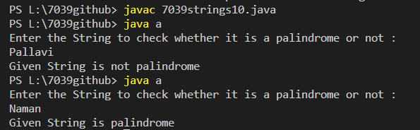

Program to check whether a string is a Palindrome
Code:-
import java.util.Scanner;
class a
{
public static void main(String[] x)
{ Scanner s=new Scanner(System.in);
System.out.println("Enter the String to check whether it is a palindrome or not :");
String str =s.nextLine();
// Convert the string to lowercase
str = str.toLowerCase();
// Reverse the string manually
String rev ="";
for(int i = str.length() - 1; i >= 0; i--) {
rev = rev + str.charAt(i);
}
if(str.equals(rev))
{
System.out.println("Given String is palindrome");
}
else
{
System.out.println("Given String is not palindrome");
}
}
}
Output:-
